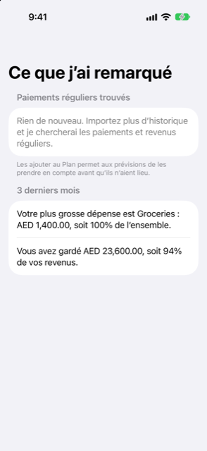

Guide › Aperçu
Ce que j’ai remarqué
Les schémas que Damla repère dans votre historique.
Ce que j’ai remarqué est la page d’Aperçu où Damla vous signale les schémas qu’il a trouvés dans votre propre historique : les paiements et les revenus qui se répètent, et comment se sont déroulés les 3 derniers mois. En un geste, vous pouvez transformer ce que vous faites déjà en entrées récurrentes, au lieu de saisir chacune à la main.

Quand l’utiliser
- Vous enregistrez depuis un moment et vous voulez que Damla trouve les paiements réguliers que vous n’avez pas encore saisis.
- Quelque chose revient sans cesse dans votre historique — un abonnement, des frais, un salaire — et vous voulez que la prévision en tienne compte avant qu’il n’arrive.
- Vous voulez un petit résumé des 3 derniers mois : votre plus grosse dépense, et si vous avez dépensé plus que ce que vous avez gagné.
Étape par étape
- Ouvrez l’onglet Aperçu et touchez Ce que j’ai remarqué.
- Lisez la section Paiements réguliers trouvés. Chaque ligne nomme le bénéficiaire, et dessous une ligne qui dit si Damla l’a lue comme des Revenus ou comme une Facture, à quel rythme cela se répète et combien de fois cela a été vu.
- Regardez le montant à droite de chaque ligne. C’est un chiffre unique, ou une plage quand le montant varie d’une fois à l’autre.
- Touchez Ajouter sur la ligne que vous reconnaissez. L’entrée est ajoutée à vos éléments récurrents, et à partir de là la prévision en tient compte avant qu’il n’arrive.
La section se termine par la ligne « Les ajouter au Plan permet à la prévision d’en tenir compte avant qu’ils n’arrivent. »
Quand il n’y a rien à signaler, la page le dit : « Rien de nouveau. Importez plus d’historique et je chercherai des paiements réguliers et des revenus. » Les lignes régulières apparaissent au fur et à mesure que vous enregistrez et importez davantage.
Les 3 derniers mois
Sous la liste, une section intitulée 3 derniers mois résume cette période de vos comptes. Elle nomme votre plus grosse dépense, avec son total et sa part de toutes les dépenses en pourcentage. Elle ajoute ensuite l’une de deux lignes : soit que vous avez dépensé plus que ce que vous avez gagné, avec la différence, soit — quand vous avez gagné quelque chose sur cette période — ce que vous avez gardé, et quelle part de ce que vous avez gagné cela représentait.
Cette section apparaît dès que vos dépenses ont au moins une catégorie. Elle lit l’ensemble des trois mois, du début du mois avant le dernier à aujourd’hui, et non le mois en cours seul, pour qu’une semaine inhabituelle ne déforme pas le tableau.
Bon à savoir
- Rien n’est ajouté tout seul. Un schéma ne devient une entrée récurrente que quand vous touchez Ajouter. C’est vous qui choisissez chacune.
- Une ligne que vous laissez de côté se montre à nouveau. Il n’y a aucun bouton pour masquer un schéma, il revient donc à la prochaine ouverture de la page.
- Un schéma doit se répéter. Damla ne propose quelque chose que s’il l’a vu trois fois ou plus, à intervalles réguliers — mensuel, hebdomadaire, ou toutes les 2 semaines — la dernière fois assez récemment pour que cela ait encore l’air en cours. Ce que vous avez déjà sous Revenus et factures n’est plus proposé.
- Une plage signifie une estimation. Quand le montant d’un paiement qui se répète varie, Damla montre l’écart qu’il a observé. Vérifiez-le avec vos propres relevés avant de l’ajouter.
- Les entrées ajoutées vivent dans le Plan. Vous pouvez les modifier ou les retirer plus tard sous Plan, Revenus et factures, comme n’importe quelle autre entrée récurrente.
- Le résumé suit vos comptes. Les deux parties sont calculées à partir de ce que vous avez enregistré. Corriger une transaction dans Activité change ce que cette page signale.
- Cette page signale ce que montre votre historique, en chiffres et en estimations. Elle donne des informations, pas des conseils financiers.
Voir aussi
- Où est passé l’argent
- Revenus et factures qui se répètent
- Prévisions et dépense sûre
- Tendances et valeur nette
Quelque chose n’est pas clair ou manque ? Écrivez à support@raveniq.ai en indiquant la page.